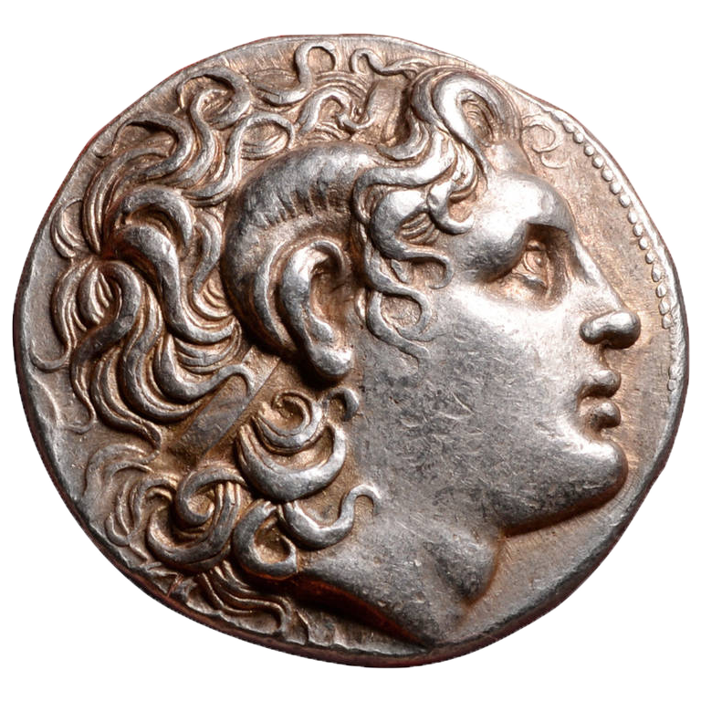
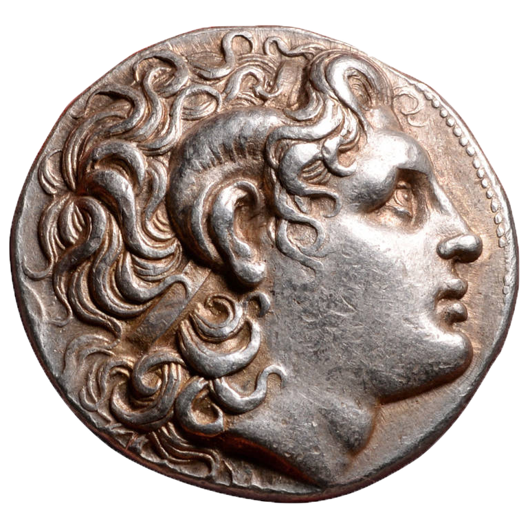

-
Alexander the Great was born to King Philip II of Macedon in 356 BCE. During his youth, Alexander learned science and political arts from Aristotle and was taught military tactics by two of his father's trusted generals, Antipater and Parmenion. Alexander's first significant claim to martial fame occured when he led the Macedonian cavalry in a charge that won the battle of Chaeronia at the age of 18. When Alexander was 20, his father was assassinated. Alexander used his loyal military connections to claim the throne - by murdering all other potential heirs, showing his affinity for ruthlessness early on.
Extent of Alexander's Macedonian Empire
 
While most of the assistance Alexander had in taking the throne came from those loyal to him in the military, his mother, Olympia, also had a hand in the matter. Olympia ensured her son's ascent to the throne by killing the daughter of King Philip II and Cleopatra of Epirus.
-
Upon claiming the crown, Alexander decided to continue on his father's plans to lead a Greek-Macedonian army across the Hellespont to fight the Persians occupying the Greek states in Asia Minor. Unfortunately, the Greeks were hesitant to support this campaign with Philip II dead. In 335 BCE, a revolt against Macedonia broke out in Thebes, where the Greek citizens forced out the Macedonians garrisoned there. In response, Alexander led his army of 3,000 cavalry and 30,000 infantry to Thebes, which was swiftly massacred as a warning to other Greek dissenters. The other Greeks heeded this message, preparing ships and soldiers for the conquest to come.
Extent of Alexander's Macedonian Empire
During the Massacre of Thebes, there was only one restriction laid out by Alexander. His troops were told to ransack the city as much as they desired, but all of the temples were off limits.
-
With Greek support all but guaranteed, Alexander marched his army, known as the Hellenic League, across the Hellespont in the spring of 334 BCE. At the Granicus River, the Hellenic League defeated a strong Persian force before marching southward to free Aeolis and Ionia from the Pesians. In 335 BCE, Alexander continued eastward across Phrygia to Gordius. Eventually he reached the Cilician Gates, a pass through the Taurus mountains which would be crucial to continuing his conquest. On November 5, 333 BCE, the Battle of Issus took place near the mouth of the Pinarus river. Despite being outnumbered, Alexander was victorious and defeated the Persian forces led by Darius III, who fled before the battle ended.
Extent of Alexander's Macedonian Empire

According to legend, when Alexander passed through Gordius he "untied" the Gordian Knot by destroying it with his sword. An oracle foretold the person who untied the knot would become the ruler of Asia - a prophecy Alexander aimed to fulfill.
-
Continuing southward, Alexander set his gaze towards Egypt. In 332 BCE, Alexander easily besieged Gaza and continued onward to capture Egypt, which fell without much difficulty. Later that year, Alexander founded the city of Alexandria, designed as a hub for Greek culture and commerce in the region. After conquering Egypt, Alexander left to continue his conquests. His next target was the land of Phoenecia, which was conquered without much trouble except for the island city of Tyre. Tyre was located just off the mainland. When Alexander's initial efforts to capture the city failed, he decided to build a massive causeway from the mainland to Tyre. Upon capturing the city, Alexander slaughtered the inhabitants and sold the survivors into slavery for their stubborn resistance.
Extent of Alexander's Macedonian Empire

Over the centuries, Alexander's causeway has gathered silt and earth. Today, Tyre is no longer on an island, as the causeway has gathered so much earth that it is now a part of the land.
-
In 331 BCE, Alexander defeated an overwhelming Persian force at the Battle of Gaugamela, effectively collapsing the Persian army. He continued on to capture Susa with no resistance before arriving at Persepolis. According to Diodorus Siculus, Alexander started the fire which destroyed the main palace and most of the city as revenge for Xerxes burning the Acropolis in 480 BCE. Alexander continued his conquest, defeating Bactria, Sogdianna, Cyropolis, and the Scythians over the course of the following year. During this time, Alexander founded many cities bearing his name, such as Alexandria-Eschate, to further his image as a god. As Alexander's empire spread across the remains of Persia, Alexander adopted the title of Shahanshah a Persian title meaning king of kings. Alexander began to adopt more Persian culture into his empire, which led to discontent from his troops.
Extent of Alexander's Macedonian Empire

Darius was not defeated by Alexander - he was murdered by his own general and cousin, Bessus. Alexander was said to deplore the fact that Darius' cousin murdered him, and Darius' body was treated with the greatest respect, as were the survivng members of his family.
-
After conquering Persia, Alexander continued to Iran. In 327 BCE, he seized the fortress in Ariamazes. After capturing Prince Oxyartes, Alexander married his daughter, Rhoxana. After leaving Iran, Alexander continued further to India. In 326 BCE, Alexander faced King Porus of Paurava in the Battle of the Hydaspes River. Porus charged Alexander's forces with elephants, fighting so bravely that Alexander decided to reinstall him as the ruler of a larger territory than he previously held, so long as the two remained allies. Alexander intended to cross the Ganges River and continue his conquest, but his troops refused, exhausted from the battle. Failing to convince his troops, Alexander assented and split his army in 2, sending half to Susa through the Persian Gulf and half through the Gedrosian Desert.
Extent of Alexander's Macedonian Empire

During the Battle of the Hydaspes River, Alexander's horse Bucephalus was killed. Alexander named one of the two cities he found afterwards "Bucephala" in his honor.
-
Upon returning to Susa in 324 BCE, Alexander found that many of the satraps he entrusted with the rule of the area had abused their power, so he executed them and those who vandalized the tomb of Cyrus the Great at Pasargadae. As mentioned before, Alexander's interest in Persian culture continued to grow intensely. He held a mass marriage in Susa in which he married members of his senior staff to Persian noblewomen. Many of his troops were upset with this and criticized his adoption of Persian dress and manners which had influenced him since 329 BCE. Tensions were alleviated as Alexander eventually conceded to some of their requests.
Extent of Alexander's Macedonian Empire
One of Alexander's most contested actions was the promotion of Persians in the Macedonian army and merging of Persian and Macedonian units. In response to his troops complaints, Alexander appointed Persians to prominent positions and gave them traditional Macedonian titles, before eventually finding a less punitive compromise.
-
In 324 BCE, Alexander's lifelong friend and second in command Hephaestion died from a fever. Alexander was inconsolable and declared a period of mourning usually reserved for kings. After he'd finished grieving, Alexander returned to plans for expanding his empire. Unfortunately, they were never realized as he died in Babylon early in June 323 BCE after suffering 10 days of high fever. Some theorize Alexander was poisoned, others believe his death was due to malaria or bacterial infection. Alexander said he wanted "the strongest" to succeed him, which led to his empire being divided between four of his generals: Cassander, Ptolemy, Antigonus, and Seleucus; known together as the Diadochi. Plutarch and Arrian, however, claim he passed his reign to Perdiccas, the man with whom Alexander carried Hephaestion's body to his funeral. Regardless, Perdiccas was assassinated in 321 BCE, leaving the four generals to rule.
Extent of Alexander's Macedonian Empire
According to Plutarch, Alexander entertained his fleet admiral Nearcus and his friend Medius of Larissa with a long bout of drinking 14 days before his death, after which he fell into a the fever that ended up killing him.